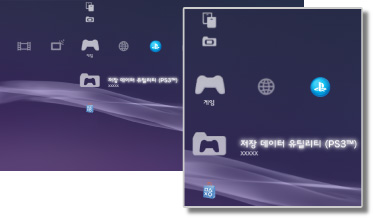

게임 > 게임 카테고리에 대하여
게임 카테고리에 대하여
 (게임)에서는 다음과 같은 아이콘이 표시됩니다. 표시되는 아이콘은 사용 환경에 따라 다릅니다.
(게임)에서는 다음과 같은 아이콘이 표시됩니다. 표시되는 아이콘은 사용 환경에 따라 다릅니다.

 |
PlayStation®Store | PlayStation®Store의 정보를 표시합니다. |
|---|---|---|
 |
게임 종료하기 | PlayStation®3 규격 소프트웨어 타이틀을 종료합니다. 게임을 기동하고 있을 때만 표시됩니다. |
 |
(타이틀명) | PlayStation®3 규격 소프트웨어 타이틀을 플레이할 수 있습니다. 아이콘을 선택하면 이미지가 표시됩니다. |
  |
PlayStation®2 규격 디스크 | PlayStation®2 규격 소프트웨어의 게임을 즐길 수 있습니다. |
 |
PlayStation® 규격 디스크 | PlayStation® 규격 소프트웨어의 게임을 즐길 수 있습니다. |
 |
저장 데이터 유틸리티(PS3™) | PlayStation®3 규격 소프트웨어의 저장 데이터를 복사/삭제하거나 정보를 볼 수 있습니다. |
| 저장 데이터 유틸리티 (minis / PSP™) | PSP™Game 및 minis의 저장 데이터를 복사/삭제하거나 정보를 볼 수 있습니다. | |
 |
Memory Card 유틸리티 | PlayStation®2/PlayStation® 규격 소프트웨어를 저장하기 위해 가상 Memory Card를 작성하거나 슬롯을 할당할 수 있습니다. 또한 저장 데이터를 복사/삭제하거나 정보를 볼 수 있습니다. |
 |
PS Vita 애플리케이션 관리 | PS Vita에서 플레이한 게임의 저장 데이터 및 애플리케이션 데이터(게임의 데이터)를 PS Vita에서 PS3™에 백업하면 여기에 저장됩니다. |
|
게임 데이터 유틸리티 | 게임에 따라 추가 데이터 등이 저장됩니다. 데이터를 삭제하거나 정보를 볼 수 있습니다. |
 |
(본체 스토리지에 설치한 게임) | 본체 스토리지에 설치한 게임입니다. 게임의 섬네일 이미지가 표시됩니다. 게임의 종류에 따라 아이콘이 다릅니다. |
 |
(본체 스토리지에 다운로드한 데이터) | 본체 스토리지에 다운로드한 게임 데이터 또는 확장 데이터인 경우에 이 아이콘이 표시됩니다. 시작하면 데이터가 설치됩니다. 데이터 유형에 따라 아이콘이 달라집니다. |
알아두기
- 사용연령제한이 설정된 콘텐츠는
 또는
또는  로 표시됩니다. 이러한 콘텐츠는 4자리 비밀번호를 입력하면 재생할 수 있습니다. 비밀번호는
로 표시됩니다. 이러한 콘텐츠는 4자리 비밀번호를 입력하면 재생할 수 있습니다. 비밀번호는  (설정) >
(설정) >  (보안 설정)에서 설정할 수 있습니다.
(보안 설정)에서 설정할 수 있습니다. - HDCP(High-bandwidth Digital Content Protection) 규격에 대응하지 않는 기기가 HDMI 케이블로 연결된 경우 PS3™의 영상 및 음성을 출력할 수 없습니다.
- 저작권 보호된 Blu-ray Disc의 영상을 1080p의 해상도로 출력하시려면 HDCP 규격에 대응하는 기기를 HDMI 케이블로 연결해야 합니다.
- 디스크 및 기록 미디어의 종류에 따라서는 PS3™에서 바르게 인식되지 않는 경우가 있습니다.
중요
- PS3™에서 일부 PlayStation®2 또는 PlayStation® 규격 소프트웨어가 종래의 PlayStation®2 또는 PlayStation®에서와 다르게 동작하거나 적절히 동작하지 않는 경우가 있습니다.
- 또한 일부의 PS3™는 PlayStation®2 규격 디스크의 재생에 대응하지 않습니다. 상세한 사항은 [재생할 수 있는 디스크의 종류에 대하여], 각 지역 웹 사이트 또는 제품에 동봉된 사용설명서를 참조해 주십시오.